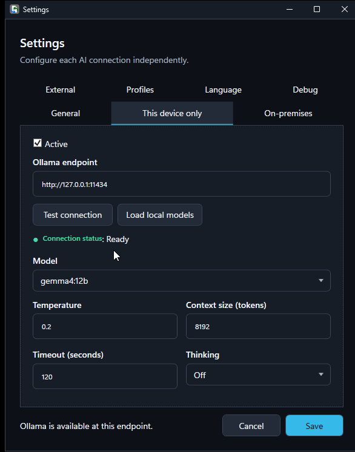
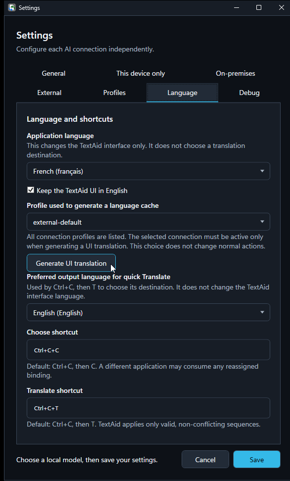

Settings
A working AI connection and model are the only essentials for a first result. The other choices can wait until you need them.
First-time setup: a local model
TextAid is configured for a local Ollama connection by default. Ollama and a compatible model need to be installed and running on this computer.
- Open the TextAid application menu (☰) or its Windows tray menu, then choose Settings.
- Open This device only and leave Active selected. The default loopback endpoint is
http://127.0.0.1:11434. - Choose Test connection. If the connection is ready, choose Load local models and select one from Model.
- Choose Save. Return to your first result.

Choose where AI runs
Settings has separate connection tabs. A connection is used only when an action selects its corresponding model profile.
| Tab | How to configure it |
|---|---|
| This device only | Use local Ollama, test its loopback endpoint, load installed models, choose one, then Save. |
| On-premises | Activate it, enter the root URL of an Ollama server on your administered network, test the connection, load its models, choose one, then Save. Do not append /v1 to an Ollama endpoint. |
| External | Activate an OpenAI-compatible service, enter its endpoint and API key, test access, load available models, choose one, then Save. |
TextAid cannot verify who owns or handles data at a network endpoint. Choose network and external services deliberately. Credentials are entered in Settings; do not put them in an action prompt.
Model profiles
The Profiles tab shows the built-in local-default, network-default, and external-default profiles and their connection categories. In Actions, select the profile an action should use. If that connection is unavailable, TextAid reports the problem rather than silently using a different one.
Languages and shortcuts
Open Language in Settings. Application language is used for the interface and for quick Translate routing. Preferred output language for quick Translate chooses the other destination. These controls are separate from the output language you choose for an individual action.
The defaults are Ctrl+C, then C for Choose and Ctrl+C, then T for Translate. Edit the Choose shortcut or Translate shortcut fields and choose Save. TextAid accepts valid, non-conflicting sequences; another Windows application may consume a reassigned shortcut first.

For interface translation generation, personal corrections, and language packs, continue to Interface language.
Other preferences
In General, choose whether TextAid starts when you sign in to Windows. This setting applies to your Windows user account. You can also reload the saved configuration there.
In Debug, optional diagnostic logging is off by default. The ordinary log records technical metadata; Full log can include input, prompts, output, and raw errors. Review and remove sensitive passages before sharing a full log. TextAid does not send logs automatically, and credentials are redacted.